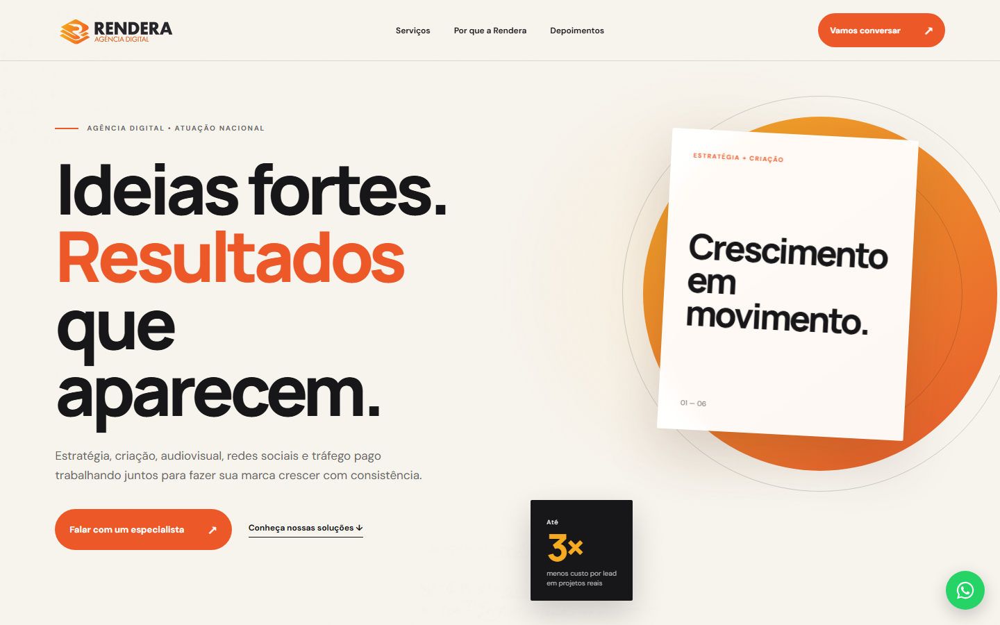
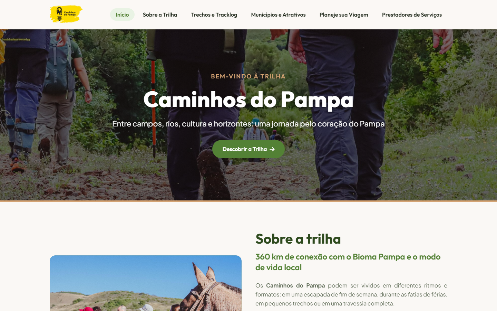
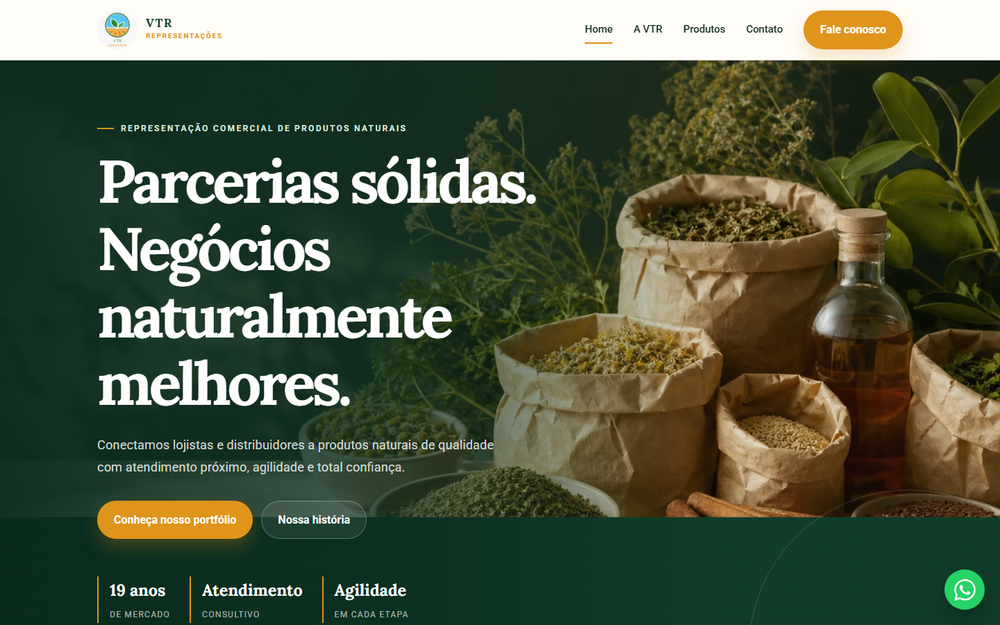
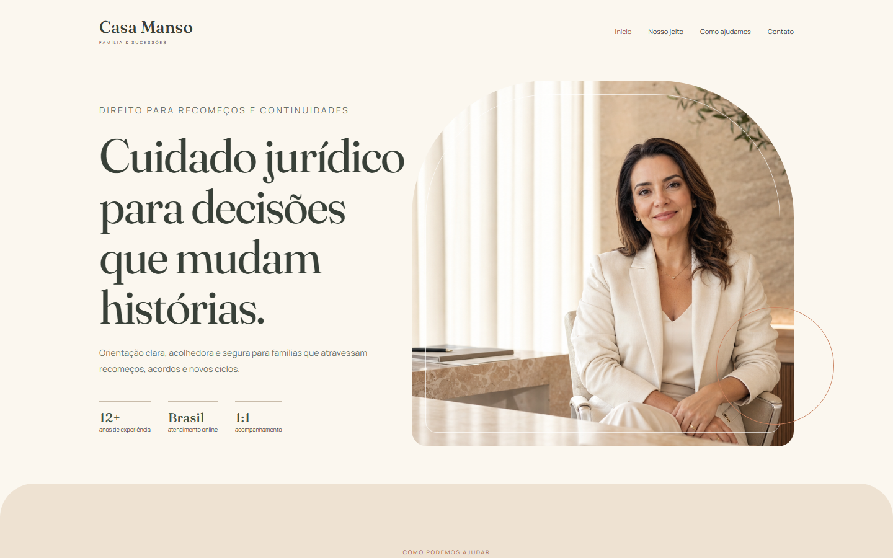
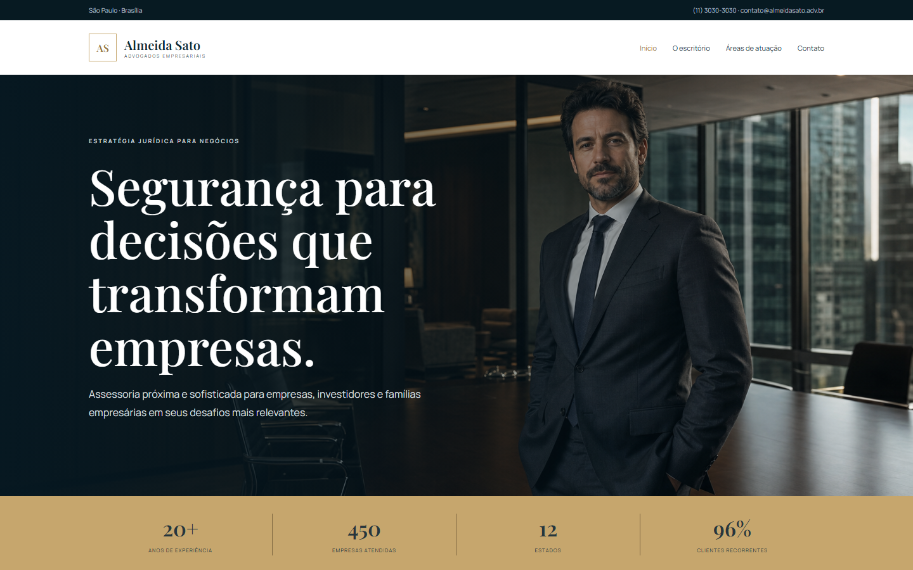
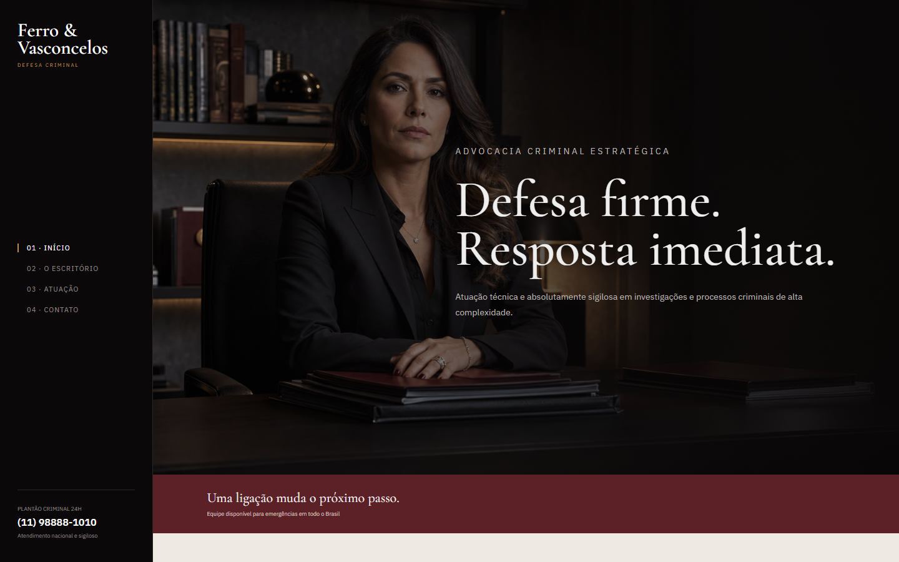

Uma boa conversa
Antes de desenhar, eu escuto e entendo o seu momento.
Olá! 👋
Gosto de transformar boas ideias em sites claros, bonitos e fáceis de usar. Trabalho perto de cada cliente, sem complicar o processo.
Antes de desenhar, eu escuto e entendo o seu momento.
Você acompanha as escolhas e participa do processo.
Do primeiro rascunho ao site publicado e funcionando.
Sobre mim
Sou Carlos, tenho 38 anos e gosto de criar coisas para a internet. Meu trabalho mistura design e programação, mas começa sempre do mesmo jeito: ouvindo com atenção o que você precisa e buscando uma solução que faça sentido para a sua realidade.
Conheça meu código ↗Projetos selecionados
Sites desenvolvidos com atenção à marca, ao conteúdo e à experiência de quem acessa.

01Arquitetura · Institucional

02Turismo · Experiência

03Catálogo · B2B

04Advocacia · Institucional

05Empresarial · Estratégia

06Jurídico · Posicionamento
Como funciona
Entendo o negócio, o público e o objetivo do projeto.
Crio a direção visual e a experiência das páginas.
Transformo o design em um site rápido e responsivo.
Reviso, publico e deixo tudo pronto para receber clientes.
Tem um projeto em mente?